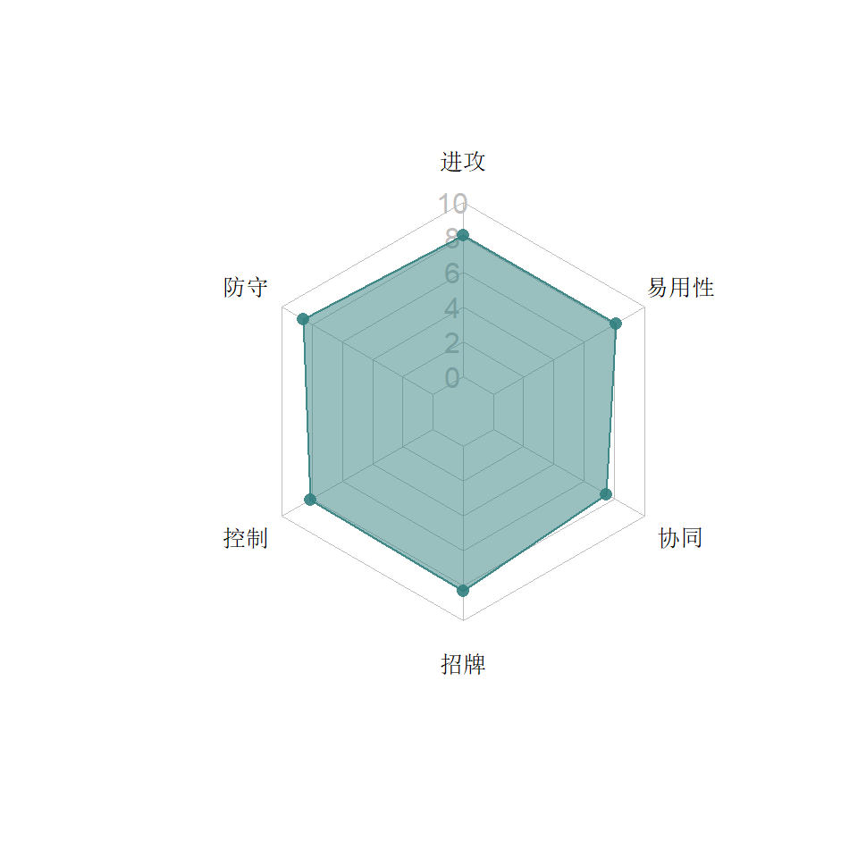

4  斗士系
斗士系
斗士系机器人攻高血长护甲厚，打法蛮横，输出快。优秀的抗dot抗暴击等性能，使他们在面对战士系、侦查系的时候优势巨大。
类别关键字：加攻，护甲，抗暴击，净化，克流血
4.1 斗擎


4.1.1 特点分析
斗士擎天柱（斗擎）作为开服即发布的机器人，早期几乎用来克制碎骨魔和未削弱版伤害加速器的唯一手段，成为了无数玩家追捧的对象，官方甚至专门将他四星版本标价出售。他简单粗暴的打法，残血翻盘的单兵能力，优秀的协同，既很好地诠了电影作品中那个霸气领袖，也令他一直在斗士系位置稳定。
4.1.1.1 能力
- 主动攻击时可以获得攻击加成，主动防御可以获得防御加成，自身遭受流血的时候可以把输出变成回血，超过一层的流血马上净化掉换成能量。
- S1是为数不多的只打一下的特殊技，但这一下血越少杀伤越大，风刃30多下的S3也难望其项背；S2除了杀伤力巨大，流血概率也更高；S3基本上就是弱化的S2，平时很少使用。
4.1.1.2 招牌
斗擎的招牌被戏称为“真男人”，使之在残血时防御和攻击大幅度增加，由于每回合都能触发，配合同样在残血时威力巨大的S1，只要不死，斗擎经常可以雄风不倒地千里走单骑。在盟战中单体复活药用在他身上十分超值。
4.1.1.3 协同
与铁皮搭配，斗擎出流血的层数有概率翻倍。与探长搭配，斗擎在战斗开始时能回血。与大黄蜂同时出战，所有汽车人获得攻击增益并在突袭中提升伤害减益效果。
4.1.1.4 短板
斗擎没有明显的短板，只是相对另一个擎天柱在协同方面没有那么亮眼。这从他们在五星池中登场的早晚也可见一斑。
后期因为野兽净化组合出现，他的抗流血能力受到了挑战，尤其是在面对纳米流血千斤顶时，如果S技出不了流血，就无法破盾，从而也无法给自己回血。
4.1.2 推荐打法
4.1.2.1 短战斗
近战缠斗为主，主动获得攻击加成，血量较多时围绕S2打输出，血量少时追求S1的高伤害。
4.1.2.2 长战斗
虽然斗擎在血量低时S1的伤害高，但长战斗最好还是稳妥地先以S2为主，毕竟S1要出了招牌之后才能有更大的提升。
在盟战中面对流血线路时，要战略性地吃一下（例如连招时的最后一下）近战，再用S技给自己大量回血。
4.1.3 基地防守
斗擎也是突袭小队的常客，由于AI很笨，基本上是白送，领袖模块也许是拖延战斗的一种方式。
4.2 碾碎器


4.2.1 特点分析
作为游戏第一批人物，碾碎器的角色一直是肉厚型猛汉。
4.2.1.1 能力
碾碎器技能不多。重击在暴击时必然施加燃烧。天然护甲高（17%），受到攻击时被动触发的护甲和降爆让很多流血系角色很难在他身上占到便宜。
- S1施加两层降暴，降低对手格挡精通，增大防御伤害。
- 主要输出手段是S2，对方能量越多，砍的越多。
- S3乏善可陈，输出太低，无非是暴击燃烧的概率高过普通重击，正常情况没人会使用S3。
4.2.1.2 招牌
根据对方的能量提升近战的伤害，属于锦上添花吃招牌的功能。面对高觉醒的碾碎器被他施加降暴后千万小心，防他的特殊技和中招一样疼。
4.2.1.3 协同
碾碎器的协同一般，无非是跟路障配合时的第一发重击能锁气。
4.2.1.4 短板
碾碎器的短板在于只有标准式的输出，进攻没有什么别的花样。三招只有一招实用，虽然S2可以打出爆炸式的伤害，并且会随着招牌越来越大，但是没有附加伤害和附加效果，对付护盾和模块会很吃力。另外作为一个输出主要看近战的选手，配的远程重击实在鸡肋。官方已预告8.0中碾碎器会得到加强。
4.2.1.5 8.0调整
碾碎器只得到了一点微调：S3的导弹如果暴击，能施加燃烧……
4.2.1.6 2019年10月3日调整
- 招牌的伤害提高
- S1：35%的概率锁6秒S2，75%的概率锁6秒S3
- S2：50%的概率锁6秒S3
- S3：100%的概率锁10秒S2和S3。并施加一层永久降暴16%（可以叠加三层）
4.2.2 推荐打法
无论是短战斗还是长战斗，碾碎器基本没有什么特别的打法，就是围绕s2打输出。虽然重击和他的打法不是特别匹配，但是因为远程重击命中后离对手不远，所以在短战斗也可以搏一搏压起身。 经过调整加入了锁特殊技后，碾碎器在战斗中可以更加放心地使用S2和招牌来利用对手的能量打伤害，只是要记住一旦打红，那即便锁定了S技也得骗招。跟路障搭配的时候，每场第一发重击可以锁能量，要善加利用。S3由于可以施加永久降暴，相应地可以提升碾碎器屈防时的伤害，长战斗中可以考虑先来一次S3。
4.2.3 基地防守
碾碎器凭借皮厚血厚带着流血模块领衔了基地防守好些日子，野兽净化出来之后慢慢失去了优势。但无论如何，流血模块还是他的绝配。领袖模块也会让他更抗揍。
4.3 汽车大师


4.3.1 特点分析
汽车大师是这个游戏最早一批的机器人，在游戏的早期以其霸气的打法和蛮横的招牌吸引了无数玩家。
4.3.1.1 能力
- 前冲时的不可阻挡，令其在打法上极具侵略性。早期的汽车大师前冲都不可阻挡时间长，即使被侧闪也不会马上遭到反击，后来官方对此进行了削弱，使得面对电脑操作的汽车大师，侧闪反击套路更容易。但是在玩家手上并没有受到太大影响。
- 重击会随机施加三种减益之一，对对对方形成一定的克制。
- S1是游戏中少数几个只有输出没有效果的特殊技，所以基本上无用。
- S2之后长时间的霸体可以对对方形成极大的威慑力，杀伤也很高。
- S3虽然杀伤力极大并且施加6个减益，但由于自身也扣血，所以不推荐使用。
4.3.1.2 招牌
汽车大师的招牌技能让其血越少，攻击提升越大，在早期的盟战中，高觉醒的汽车大师只要吃一个单体复活，就能打出极高的伤害，非常划算。
4.3.1.3 协同
可能是因为汽车大师输出太强，所以自己不但没有斗士们的护甲能力，连协同中都没有友军为他提供护甲。他与喷气机搭配时，S技有概率击晕。与喷气机或反冲搭配时，减益时间+40%且不能被净化。
4.3.1.4 短板
在盟战地图改版之后，汽车大师在老图3和新图3的作用没有图2那样保险。主要还是因为打法侵略性容易造成头脑发热，吃到不必要的伤害。
4.3.2 推荐打法
勇气精通配合汽车大师十分有用。
4.3.2.1 短战斗
在不需要考虑续航的时候，汽车大师完全不需要与对手点枪相持，一路蛮横地前冲结合四连一撞即可，重击施加的三种减益也横竖都是赚。稍微长一点的战斗也可以用前冲霸体来弥补预判上的失误。S2是主要的输出手段，S2之后的霸体时间，电脑会比较龟，四处跑，要注意抓住机会。
4.3.2.2 长战斗
汽车大师虽然蛮横，但在长战斗中只要操作得当，保证不吃伤害，可以有很大的输出。这时还是用牵制与侧闪战术，再配合四连一撞。盟战中死亡后使用便宜的单体复活，打开一个5小时的暗杀加成，可以非常经济地换掉很多个敌人。
4.3.3 基地防守
汽车大师建议只用觉醒版的守基地，利用觉醒夜莺模块守关底，或者过滤器模块持续霸体，或者领袖模块来翻盘。
4.4 钢锁


4.4.1 特点分析
钢锁的发布在一定程度上夺走了斗擎“流血克星”的风头，因为他的招牌不但能净化流血还能净化其他伤害减益（DOT）。
4.4.1.1 能力
进攻对手或者S2和S3时会获得攻击加成，重击和S1能燃烧，变龙时（重击和特殊攻击）不承受任何伤害并刷新身上的攻击加成。
4.4.1.2 招牌
净化所有DOT，并转换为同等数目的攻击加成。突袭中钢锁面对流血模块尤其是流血纳米千（血纳千）很有心得。不过净化触发略慢一拍，还是会承受一定伤害，所以建议吃到DOT时尽快变形阻止伤害。
4.4.1.3 协同
钢锁除了基础的加攻加护甲，没有什么特色协同。
4.4.1.4 短板
- 钢锁基础输出不高，要靠刷新攻击buff的方式来弥补。但这也是他打法矛盾的地方，因为这让钢锁的打法偏向远近结合，无法最大化利用近战伤害，只能寄希望于重击时概率施加燃烧来补充。
- 也许是因为变龙可以不受伤害，也许是因为钢锁已然拥有游戏中第一的血量，钢锁在斗士中居然没有护甲能力。
- 此外，单兵强，协同差，也让钢锁的应用场合受到了限制。
4.4.1.5 8.0调整
净化的速度从1.5秒缩短为1秒，提升了钢锁的安全性。
4.4.1.6 2020年8月调整
- 重击时除了不受伤害外，加上了霸体光圈，让钢锁可以更蛮横地吐火球，不用担心在放风筝打法中被流弹击中。当月的特殊任务中有一条狂暴集中线，钢锁可以用这个方法与三重霸体的敌人“正面硬刚”
- 招牌的伤害比例提高
- S1时100%得到一层加攻
4.4.2 推荐打法
未觉醒的钢锁不要打DOT对手干脆放着别用。
4.4.2.1 短战斗
利用钢锁重击回弹很短的特性，四连一重压起身的打法保持在对方附近。如果用S1作为主要的输出手段则不用刻意刷新buff时间。如果用S2的话最好保证出招时有一定层数的攻击buff来最大化输出。
4.4.2.2 长战斗
长战斗中需要尽可能多地把攻击加成守住，所以平时最好用放风筝结合侧闪反击的打法，保证重击的频率，以S2为主要的输出手段。
4.4.3 基地防守
钢锁的AI比较弱，而且一般是突袭小队的常客，基地防守的意义不大。由于S2比较吓人，超导2000是一种选择。
4.5 猩猩队长


4.5.1 特点分析
猩猩队长的发布彻底改变了野兽系在这个游戏中的地位，他是野兽净化组合的灵魂人物。
4.5.1.1 能力
- 猩猩队长自带令人头痛的黄色护盾，100%的暴击抗性，让他防守时克制了很多类别（爆破，战士和侦查）。重击后会将护甲转换为攻击，让他行进攻时有很多花样。S1拥有复仇式的流血能力，没有吃到流血时就没有必要使用了。s2是主要的进攻手段，但是s2经常容易连招打空。S3适合长战斗。
- 除了牺牲护甲可以加攻，在对手防御时也会随机获得加攻，所以猩猩在屈防对手时一定多打几下，而不要急于放重击。
- 猩猩的重击是一种神奇的存在：不会被声波反弹，会触发碎骨魔被动流血，像近战；但是又会被阿尔茜规避掉，像远程。
4.5.1.2 招牌
招牌是根据自己身上护甲的数目，加速dot的过期。并且每过期一个流血减益，就进行一定程度的自我修复。流血类机器人面对高觉醒的猩猩，经常会有越打血越多的痛苦。因为回血只针对流血DOT，对玩家来说，只要组野兽净化对，就不需要特别在意猩猩是否觉醒。
4.5.1.3 协同
野兽净化（俗称动物园）：猩猩队长搭配两个野兽角色，就能使所有人的重击净化一切伤害减益，这使得他们在面对各类伤害减益模块的时候，非常有安全感，是突袭的不二选择，盟战中也有很大的优势。
4.5.1.4 短板
猩猩虽然基础攻击力排名全游戏第4，但平时的输出总让人感觉不是那么给力。护甲和加攻的切换有时候也是挺费脑的事情。玩家使用的时候黄色护甲很难主动堆高，要吃一些防御或者憋出S3。特殊经常打空的bug也令玩家十分郁闷。
4.5.2 推荐打法
4.5.2.1 短战斗
此时不考虑保留自己的护甲，用四连重击或者放风筝的打法都可。对方防御时一定打满4下，争取一定的加攻。没有吃到流血前不要放S1，主要靠S2输出。
4.5.2.2 长战斗
上来直奔第一个S3而去，不要放重击。在气红前放重击马上接S3，最大化输出。然后守住10层护甲围绕S2打输出，不要贸然使用重击，如果配有净化协同，则吃到dot时放重击。猩猩不放重击的话输出受限制，需要更多耐心。
4.5.3 基地防守
猩猩队长被打的时候护甲疯狂提升，搭配过滤器，流血模块都不错。
4.6 野牛


4.6.1 特点分析
野牛是较晚发布的斗士，打法异于常人。主动站防类的代表人物。
4.6.1.1 能力
- 站防一段时间获得霸体，每次前冲获得加攻。但是没有霸体时一后退就失去所有的加攻，这让野牛的打法很古怪，只有在霸体的时候前后前后几次把攻击堆起来，但是无脑的前冲后退少不了吃一些伤害。
- S1很鸡肋，如果没有堆到足够的加攻，全程喷火都不一定出燃烧，这喷火器是马戏团的吗？S2虽然输出大，但是不可防御的属性对玩家意义不大，主要看是否打晕，眩晕概率同样取决于加攻的数目。真正凶狠的还靠S3。
4.6.1.2 招牌
每获得三个加攻变得狂暴，提升暴击，并且20%概率破防，出招牌还净化伤害减益并且在招牌期间免疫伤害减益。如果玩家善于获得加攻，是一个不错的提升。
4.6.1.3 协同
帮助野兽角色重击后概率破防，这对他们是相当大的提升。但遗憾的是野牛自己并不获得这个效果，何况还跟猩猩产生属性冗余，只能在5人推图时起到作用，堪称“不用上场的辅助”。另外近战连击破防后连大招很可能被电脑防住，这个bug官方一直没有修复。
4.6.1.4 短板
野牛的打法不容易上手，正常打法前冲打完没连特殊就是后退找机会，野牛除非有霸体，不能轻易后退，霸体充电又有冷却时间，侧闪又容易被对手抓住。所以要保住加攻，只能经常防御。如果彻底放弃攒加攻的打法，野牛又失去了存在的意义，所以终归更适合短战斗。
4.6.2 推荐打法
4.6.2.1 短战斗
上来充满霸体，无脑前后前后前后（打中也后退再前冲），弄三个加成出招牌。霸体冷却过程宁可站防也不后退，下一次霸体再充到6层，利用攻击优势搏S2晕点，解决战斗。
4.6.2.2 长战斗
上来充满霸体，不要无脑冲，安全打法直奔第一个S3，然后利用9秒的霸体再去攒高加攻。之后不要刻意死守加攻，实在丢了就重来，野牛有一个好处就是S3很优秀，所以如果在S1和S2时没有加攻，可以不放，因为没有燃烧和晕点的这两招还不如一个S3。
4.6.3 基地防守
AI的野牛基本上不会主动站防触发霸体，只要停止进攻，他就停止防御。暂时想不出有什么好的模块能加强之。
4.7 惊天雷


4.7.1 特点分析
在官方宣布“不再发布新机器人”时，坊间盛传Kabam失去了孩之宝的版权。没想到在2019年4月的二周年庆时，Kabam发布了新的挑战任务（地图与之前小黄蜂发布时的相同），并且Boss是惊天雷不说，完成任意难度的挑战都能获得惊天雷（2~4星）。
虽然惊天雷是斗士让人有点费解，但是这个“红蜘蛛重涂”自一登场就让人觉得有点霸气外露。
在泰坦货币商店中惊天雷的价格是17万。
4.7.1.1 能力
- 惊天雷不产生任何暴击。原本要触发的任何暴击都变为相当于此次暴击伤害8%的近战增益。
- 惊天雷重击时净化以下减益：震击/燃烧/流血/逆火/目眩。这让惊天雷不但单兵就相当于觉醒钢锁，还超越了动物园的协同，因为连蝎子的独门绝技都不怕。
- 每净化一个减益且惊天雷重击命中，则施加一层7秒内80%攻击的燃烧。
- 净化减益时获得一个3~8%的近战增益，持续7秒。
- 近战攻击：刷新所有近战增益过期时间。近战攻击后侧闪也能刷新。
- 侧闪的时候被近战击中会变得不可阻挡，不过持续时间并不长，可以防止在近战缠斗中走位失误被对手抓住。
- 将对方从地面类载具形态打断时，7秒内获得20%的护甲和10%的近战增益。打击正变形为地面类载具的敌人时攻击+100%
- 远程攻击获得10%的近战增益，持续0.9秒
- 14%血以上时，惊天雷的防御不会被地面类载具重击击倒。
官方也没有具体定义什么是“地面类载具”，反正大部分重击他都能防住（天火这种变飞机的防不住，但震天尊这种飞机又可以防住……）。这在游戏中真是少有（之前只有背水一战精通和某盟战模块有此性能） - 防御的格挡精通+15%，对地面载具的机器人再+15%
- 适时格挡刷新所有近战增益。适时格挡地面载具机器人的近战可以获得10%的近战加成并弹开对手。也就是惊天雷也有搅拌者/天火们的反弹对手能力。
三个S技的动作与红蜘蛛完全相同，但效果差别巨大：
- S1：第一拳命中后刷新所有近战增益，后续每一发射击命中获得一层10%的近战加成2秒。
- S2：命中刷新所有近战增益。每层增益+2%伤害。
- S3：施加相当于攻击力60~100%的震击6秒。惊天雷身上每层增益+2%震击伤害。敌人身上每层增益+5%震击伤害。
4.7.1.2 招牌
- 在身上没有减益时近战攻击每击中5次获得5~20%的近战加成7秒。
- 近战攻击有概率净化任何减益（每一级招牌增加0.2%的概率），这补充了惊天雷重击不能净化酸液的不足
- 战斗开始时，敌人如果有攻击加成（来自精通，模块或能力），惊天雷也会给自己加攻（每一级招牌加0.15%）
4.7.1.3 协同
惊天雷的协同主要是授益他人：
- 搭配红蜘蛛/喷气机时，提升队中霸天虎成员的远程攻击的伤害与护甲穿透力。
- 搭配红蜘蛛/喷气机/碾碎器/狂飙/黄蜂勇士/风刃/天火时，加5~25%的规避克制。
4.7.1.4 短板
惊天雷整体优势巨大，没有明显短板。不过要注意侧闪出霸体并只能自保，没有足够的时间反击。另外血量在斗士中是比较低的。远程型的重击也让他和碾碎器一样，在近战压制中感觉差了那么点意思。
4.7.2 推荐打法
4.7.2.1 短战斗
惊天雷作为斗士，拥有强大的净化能力，加攻的技能让他尤其适合近战缠斗，并且适时格挡、侧闪被动霸体和重击能防都让他在近战中不容易被敌人打回头。短战斗时围绕4连一重击和压起身，反复使用S1堆高伤害。
4.7.2.2 长战斗
在短战斗的基础上多保障自己少吃对方攻击，切不可为了刷新加成而盲目攻得太凶。如果在S2快出来时没有堆到太多加成，建议不如换成两个S1划算。在面对buff多的对手可以使用S3。
4.7.3 基地防守
由于电脑AI不太懂得合理利用惊天雷净化和加攻的能力，加上惊天雷在突袭时优势巨大，基地防守不是惊天雷的专长。由于他能挡住大部分重击，所以如果配折射镜模块，可以有效防止远程重击角色用重击放风筝。